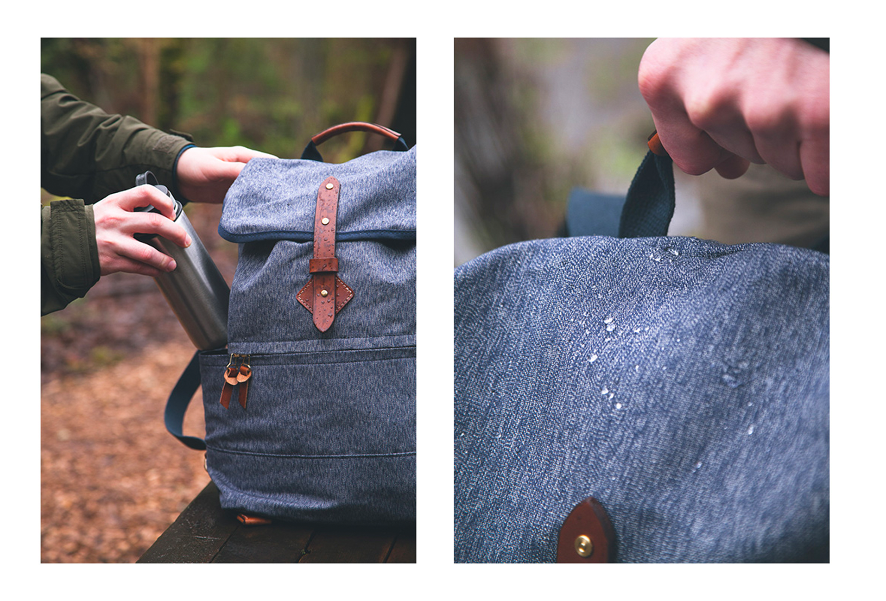

<div class="cate-container">
  <div class="block-container">
    <div class="container">
      <div class="title-content">
        <h1>Tanner Collections</h1>
        <p>NAVY SALT &amp; PEPPER</p>
      </div>
      <div class="cate-content">
        <div class="cate-first">
          <h1>01</h1>
          <div class="cate-first__content">
            <div class="cate-first__img">
              
            </div>
            <div class="cate-first__text">
              <h2>NOMAD DUFFLE</h2>
              <p>
                This bag can be carried by hand, worn as a backpack or slung
                over a shoulder depending on your traveling needs
              </p>
              <a href="#" class="link-readmore"><span>Read more</span></a>
            </div>
          </div>
          <div class="cate-second__content">
            <div class="cate-second__text">
              <h2>SPRUCE SALT &amp; PEPPER</h2>
              <div class="cate-second__text__box">
                <p>
                  We designed our Nomad Duffle as a versatile yet rugged piece
                  of luggage that's just as comfortable outdoors as it is in an
                  overhead compartment
                </p>
                <a href="#" class="link-readmore"><span>Read more</span></a>
              </div>
            </div>
            <div class="cate-second__img">
              
            </div>
          </div>
        </div>
      </div>
    </div>
  </div>
</div>
